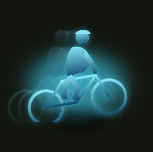
Mapa de rutas
La ruta que dejó el preparador, con clima, aire y polen por tramo.
Proyecto de práctica · SAHG SAS × Higuita Monster
PelotonSync junta en una sola app lo que hoy vive regado en hojas de cálculo, PDFs, chats y apps sueltas: entrenos, comida, cómo amaneció el cuerpo, médico, medicamentos y agenda. El ciclista registra en 30 segundos y su equipo ve lo que necesita.
01 · Por qué existe
Un ciclista de ruta entrena entre 25 y 35 horas por semana B. Al bajarse de la bici todavía le toca reportar cómo durmió, qué comió, qué le duele y cuándo es el control antidopaje, cada cosa en un lugar distinto. Lo hace justo en las horas en que debería descansar.
Las ecuaciones de población general subestiman el gasto fuera del ejercicio. F4
Toca el interruptor o sigue bajando: así se ve la operación de un ciclista antes y después de sincronizarla.
Registro único del ciclista
Incluso equipos de punta reparten sus datos en varios sistemas: Visma usa Smartbase para datos y FoodCoach para nutrición, y antes su jefe de nutrición armaba hojas de cálculo por ciclista. P5 En el deporte, las hojas de cálculo siguen siendo una práctica común para manejar datos. F6
Pregunta de investigación B
02 · La solución
El menú inferior tiene cuatro pilares B. Cada uno tiene su color de aura para que el ciclista sepa dónde está sin leer.

La ruta que dejó el preparador, con clima, aire y polen por tramo.
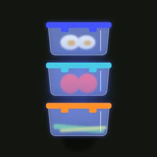
Check-in de 30 s: ánimo, sueño, estrés, dolor y la comida asignada.
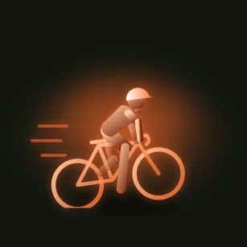
Vatios, cadencia y sensaciones, con un mapa de calor de la fatiga.
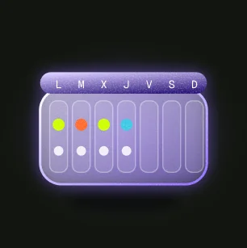
Entrenos, citas, medicamentos y antidopaje, más un asistente IA.
03 · Así se ve
Cambia el tema arriba a la derecha: la app tiene modo oscuro para la noche y la recuperación, y modo claro para el día en la calle.
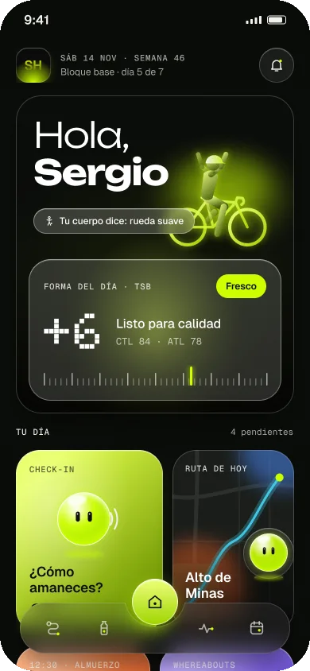
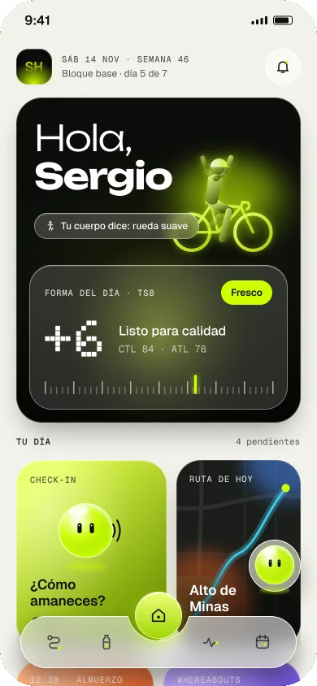
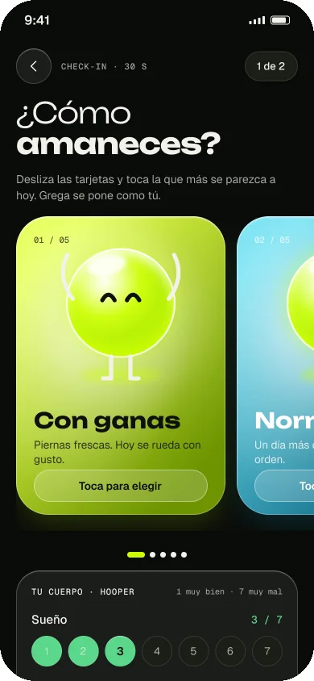
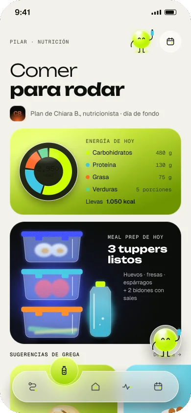
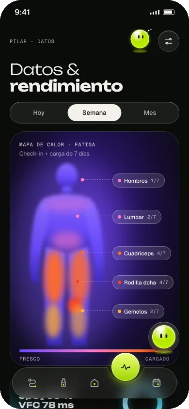
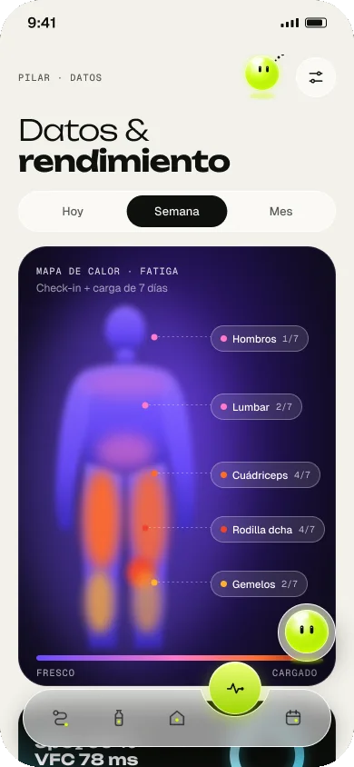
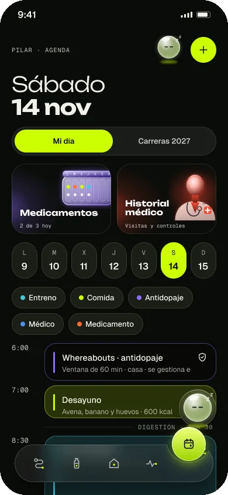

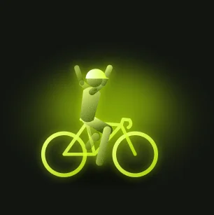
04 · Caso de estudio
Escalador y puncher de Medellín, nacido en 1997, de 1,66 m. P7 Ganó la general de la Volta a Catalunya 2022 y fue 9.º en el Tour de Suisse 2026. P7
Ha pasado por cinco estructuras distintas, de Manzana Postobón a Caja Rural-Seguros RGA para 2027. P8 Cada equipo tiene sus propios sistemas, así que con cada cambio parte del historial se queda atrás. H
Ver su ficha y las demásManual
Evidencia
Estructura
Alta fidelidad